Fenomena Cuaca
Hujan, badai, kabut, pelangi, suhu ekstrem, sampai fenomena optik.
Fenomena Cuaca
Fenomena cuaca adalah “aksi panggung” atmosfer: hujan, pelangi, badai petir, kabut, angin kencang, dan lain-lain. Semua muncul karena kombinasi suhu, kelembapan, tekanan, dan angin.
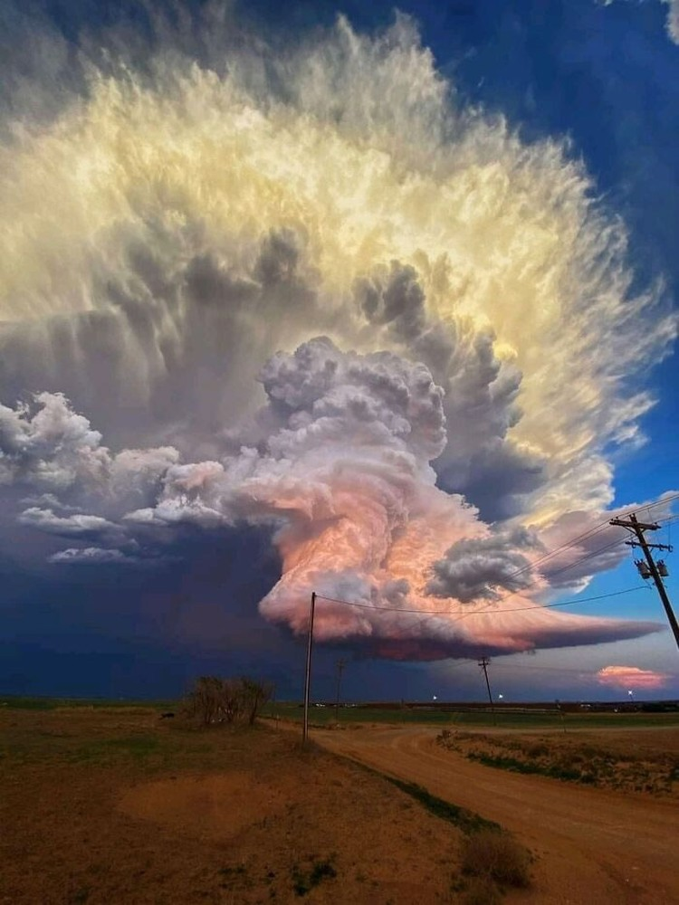
Hujan
Terbentuk saat uap air naik, mendingin, lalu mengembun jadi titik air.
- Konvektif: siang hari, intensitas tinggi, durasi singkat.
- Orografis: udara lembap naik pegunungan → mendingin → hujan.
- Frontal: pertemuan massa udara hangat & dingin.
- Ekstrem: curah hujan sangat besar dalam waktu singkat.
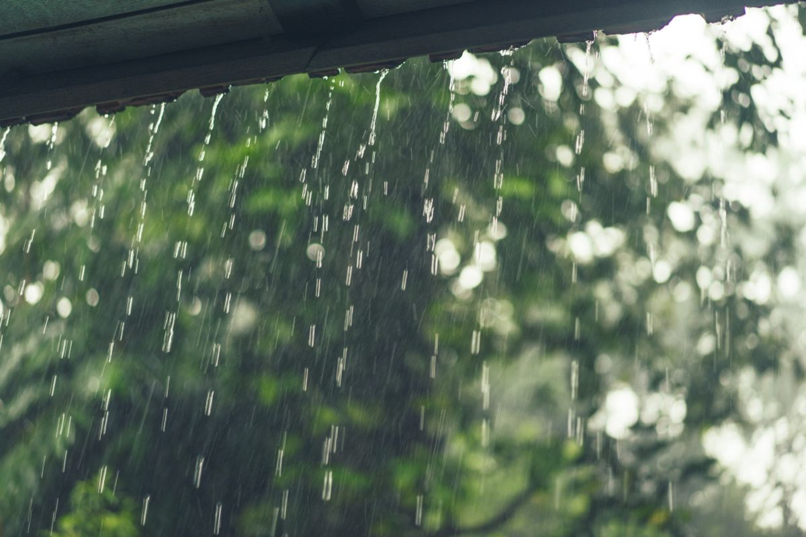
Badai Petir
Berasal dari awan Cumulonimbus (Cb); gesekan partikel es memicu muatan listrik → kilat/petir.
- Kilat/petir
- Hujan lebat
- Angin kencang
- Kadang disertai hujan es
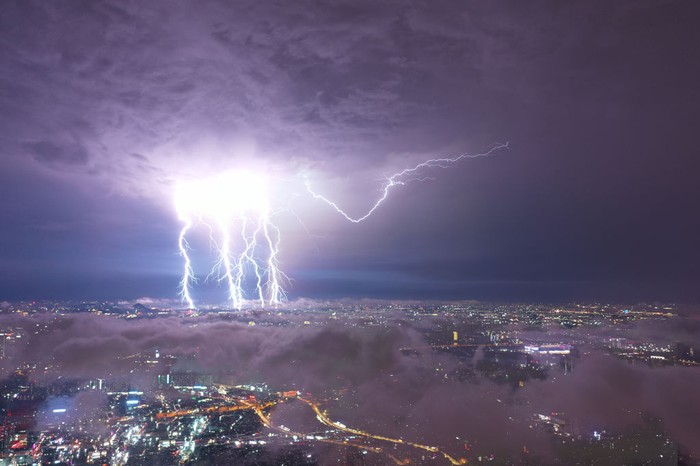
Angin Kencang
Terjadi akibat perbedaan tekanan besar atau arus turun dari awan Cb.
- Dampak: kerusakan ringan, pohon tumbang, gelombang tinggi.
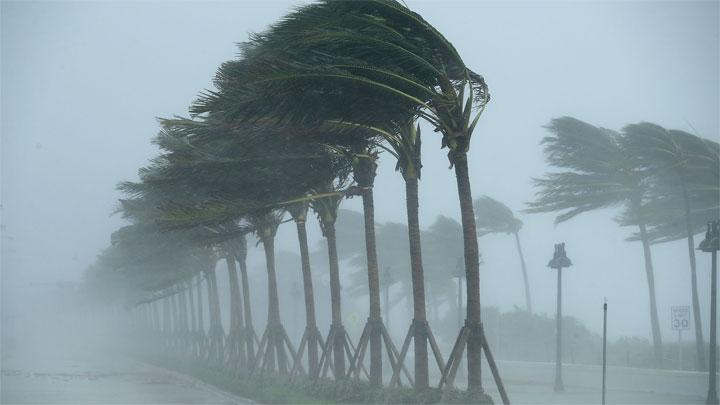
Kabut
Kumpulan titik air kecil yang menggantung dekat permukaan.
- Radiation fog: malam–pagi, permukaan mendingin.
- Advection fog: udara hangat lembap bergerak di atas permukaan dingin.
- Valley fog: kabut di lembah.
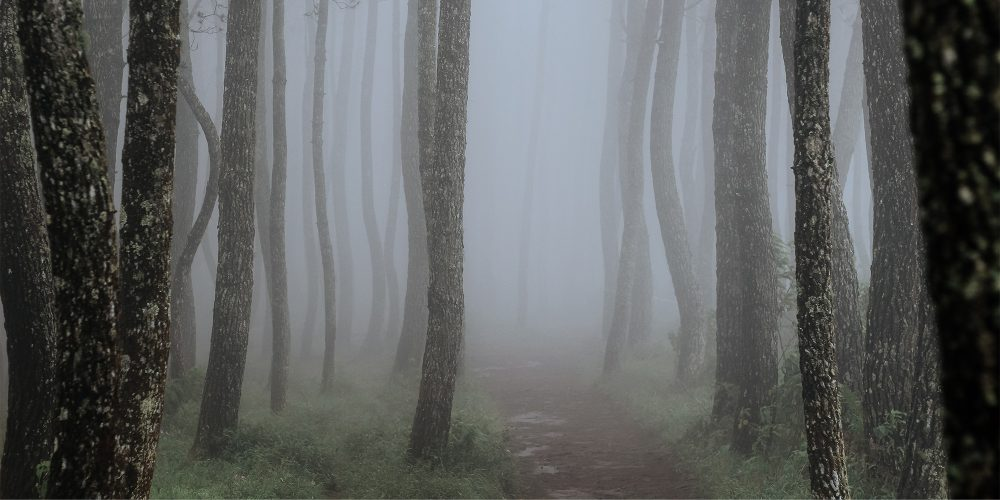
Embun & Embun Beku
- Embun: uap air mengembun jadi titik air di permukaan dingin.
- Frost: suhu < 0°C → uap air langsung jadi kristal es.
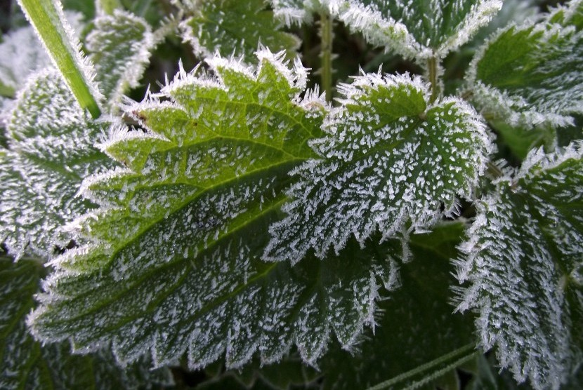
Puting Beliung
- Durasi singkat
- Jalur sempit
- Kerusakan terarah (funnel)
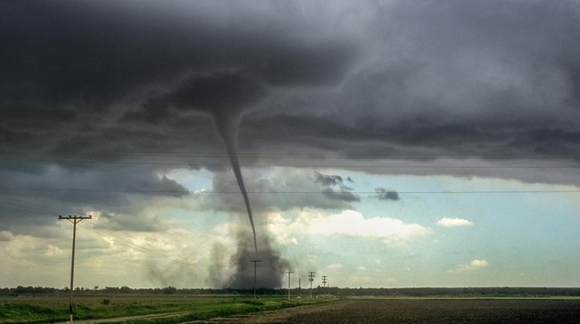
Hujan Es
Terbentuk dari tetesan air dalam awan Cb yang membeku lalu jatuh.
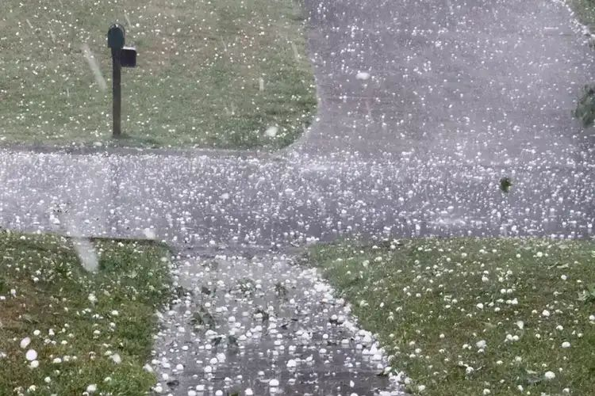
Pelangi
Muncul ketika cahaya matahari dibiaskan oleh tetesan hujan sehingga membentuk spektrum warna.
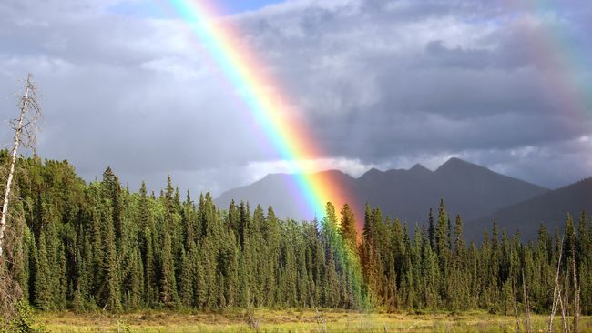
Awan Gelap / Hujan
- Nimbostratus: awan gelap luas, hujan stabil & lama.
- Cumulonimbus: awan tinggi, badai, petir, hujan ekstrem, angin kencang, hujan es.
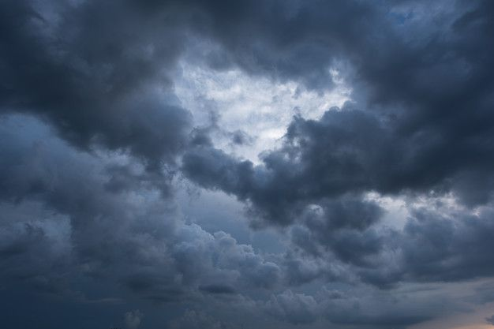
Suhu Ekstrem
- Heatwave: suhu tinggi berhari-hari → dehidrasi, kebakaran hutan.
- Cold Surge: dorongan udara dingin → hujan lebat, angin kencang, penurunan suhu mendadak.
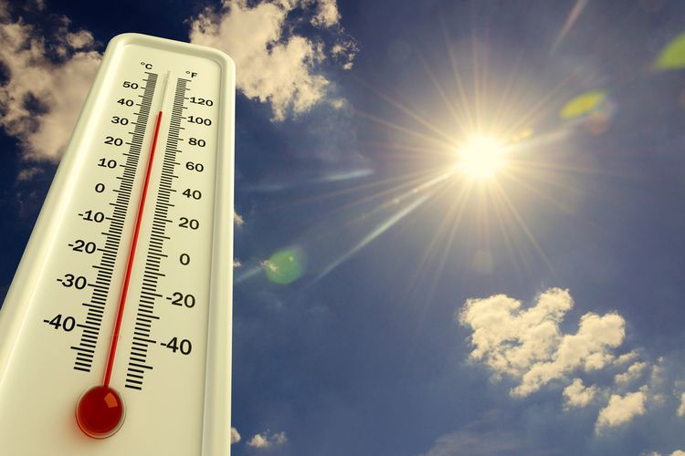
Fenomena Optik Atmosfer
- Halo: cincin cahaya di sekitar matahari/bulan.
- Sundog (Parhelia): matahari kembar.
- Glory: lingkaran warna-warni di sekitar bayangan pesawat/gunung.
- Mirage (Fatamorgana): pembiasan cahaya akibat perbedaan suhu.
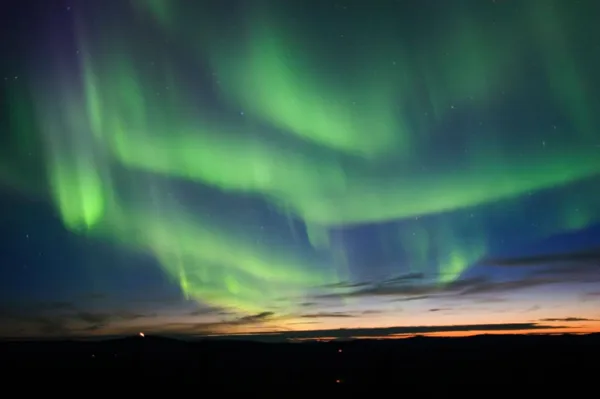
Fun Fact
- Petir 5x lebih panas dari permukaan matahari (30.000°C!).
- Pelangi sebenarnya lingkaran penuh, manusia hanya melihat setengahnya.
- Hujan es bisa terjadi di tropis jika arus naik di awan Cb sangat kuat.
Mulai Kuis
Kuis fenomena cuaca: soal acak, animasi & suara umpan balik.